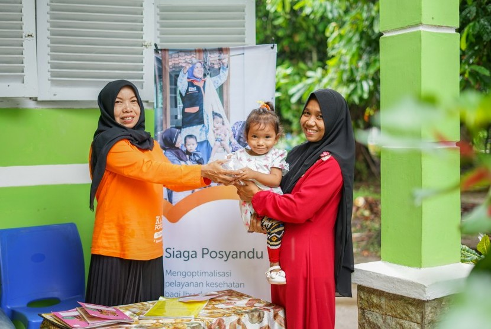

Sejarah Desa
sejarah desa sejarah desasejarah desasejarah desasejarah desasejarah desasejarah desasejarah desasejarah desasejarah desasejarah desasejarah desasejarah desasejarah desasejarah desasejarah desasejarah desasejarah desasejarah desasejarah desasejarah desasejarah desasejarah desasejarah desa

Struktur Organisasi
struktur organisai desa nagaratengah
aspek bidang
Fasilitas Desa
Posyandu
Posyandu Posyandu Posyandu Posyandu Posyandu Posyandu Posyandu Posyandu Posyandu Posyandu Posyandu Posyandu Posyandu Posyandu
Puskesmas
Puskesmas Puskesmas Puskesmas Puskesmas Puskesmas Puskesmas Puskesmas Puskesmas Puskesmas Puskesmas Puskesmas Puskesmas Puskesmas
Sarana Pendidikan
Sarana Pendidikan Sarana Pendidikan Sarana Pendidikan Sarana Pendidikan Sarana Pendidikan Sarana Pendidikan Sarana Pendidikan Sarana Pendidikan
Kegiatan
Beberapa Kegiatan Desa

Penanaman Bibit
Penanaman bibit dilakukan agar ekosistem alam tetap terjaga
Seminar Kesehatan
Seminar Kesehatan yang dilakukan rutin setiap bulannya
Seminar Kesehatan
Seminar Kesehatan yang dilakukan rutin setiap bulannya
Seminar Kesehatan
Seminar Kesehatan yang dilakukan rutin setiap bulannya
Seminar Kesehatan
Seminar Kesehatan yang dilakukan rutin setiap bulannya
Seminar Kesehatan
Seminar Kesehatan yang dilakukan rutin setiap bulannya
Seminar Kesehatan
Seminar Kesehatan yang dilakukan rutin setiap bulannya
Seminar Kesehatan
Seminar Kesehatan yang dilakukan rutin setiap bulannya
Organisasi Desa
Organisasi yang ada di Desa Nagaratengah

Karang Taruna
Karang Taruna adalah organisasi kepemudaan di Indonesia yang dibentuk oleh masyarakat sebagai wadah generasi muda untuk mengembangkan diri, tumbuh, dan berkembang atas dasar kesadaran serta tanggung jawab sosial dari, oleh, dan untuk generasi muda, yang berorientasi pada tercapainya kesejahteraan sosial bagi masyarakat.

Pemberdayaan Kesejahteraan Keluarga (PKK)
Gerakan Pemberdayaan dan Kesejahteraan Keluarga, selanjutnya di singkat PKK, adalah gerakan nasional dalam pembangunan masyarakat yang tumbuh dari bawah yang pengelolaannya DARI, OLEH dan UNTUK masyarakat menuju terwujudnya keluarga yang beriman dan bertaqwa kepada Tuhan Yang Maha Esa, berakhlak mulia dan berbudi luhur, sehat sejahtera, maju dan mandiri, kesetaraan dan keadilan gender serta kesadaran hukum dan lingkungan.
Galeri
Tanam Bibit
Tanam Bibit
Jumat Bersih
membersihkan halaman rumah

Posyandu
Posyandu Mingguan

Pengajian
Pengajian rutin
Tanam Bibit
Tanam Bibit